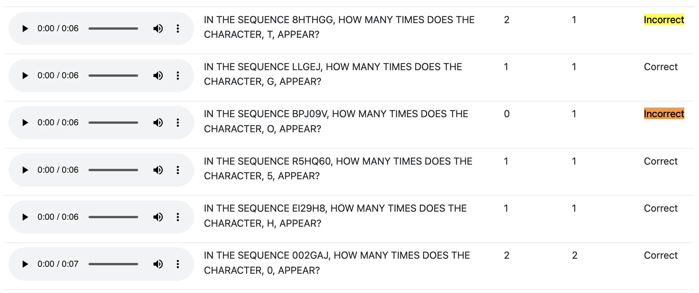
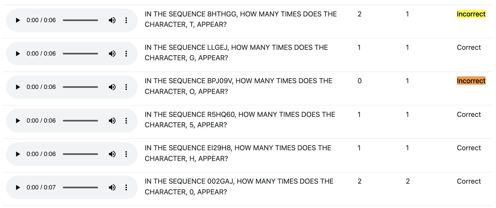

Problem
Folks with visual impairments struggle with captchas
Solution
An audio captcha generator that can be used to verify users, testing if GPT4o could solve it if we let it use a trasnscription tool
Learning
Explored accessibility and agent use cases